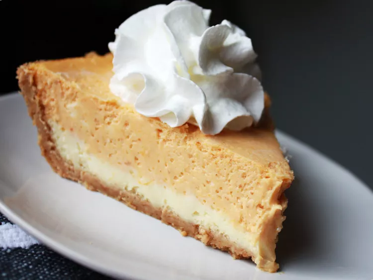

Cheesecake Recipe

Description
Looking to switch things up this holiday season? Trade your traditional pie for a pumpkin cheesecake. With two layers of creamy goodness, this decadent treat will be the star of your Thanksgiving dessert table.
Ingredients
- 2 (8 ounce) packages cream cheese, softened
- ½ cup white sugar
- ½ teaspoon vanilla extract
- 2 large eggs
- 1 (9 inch) prepared graham cracker crust
- and plenty more!
Steps
- Preheat the oven to 325 degrees F (165 degrees C).
- Make cheesecake layer: Beat cream cheese, sugar, and vanilla in a large bowl with an electric mixer until smooth. Add eggs, one at a time, blending well after each addition.
- Spread 1 cup batter in the graham cracker crust.
- Make pumpkin layer: Add pumpkin puree, cinnamon, cloves, and nutmeg to the remaining batter; stir gently until well blended.
- Carefully spread on top of plain cheesecake batter in the crust.
- Bake in the preheated oven until the edges are puffed and the surface is firm except for a small spot in the center that jiggled when the pan is gently shaken, 35 to 40 minutes.
- Remove from the oven, set on a wire rack, and cool to room temperature, 1 to 2 hours.
- Refrigerate for at least 3 hours before serving, preferably overnight.
Creator's Note
Recipe item list is not complete. To view full recipe click here